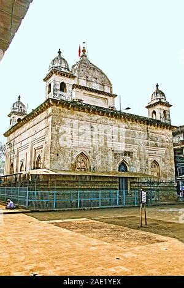
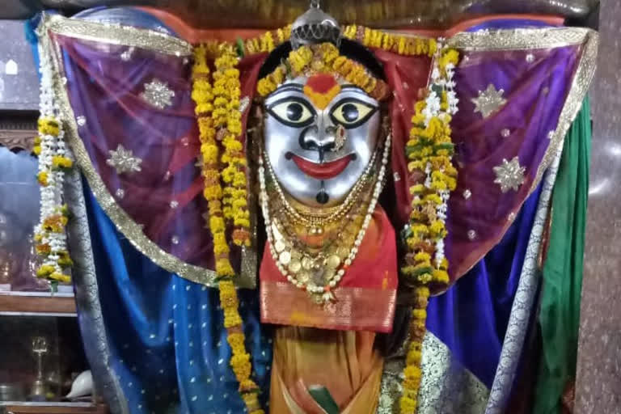

Mahakali Temple
Mahakali Temple
It holds a special place in the hearts of Chandrapur residents and serves as a symbol for Chandrapur City. Every day, devotees attend Mahakali Mandir, but Tuesdays are a particular day to go. Within the walls of the Mahakali Mandir are miniature temples dedicated to Ganesha and Hanuman. For the temple, there are two entrances. The Ganesh and Hanuman temple is located beside the back entrance. Small stores with puja goods like coconut, flowers, and linen are located at both entrances. Near the temple, we constantly find various additional goods for home and puja décor. In addition, there is a Shani shrine close to the back door.
History

According to Gond tradition, Khandkya Ballal, the son of Gond King Surja (Ser Sah), became ruler in the 13th century CE. Suffering from severe tumours that could not be cured, he moved from Sirpur to the northern bank of the Wardha River on the advice of his intelligent and devoted queen. There, he founded the fort and settlement of Ballalpur, which later became an important center of Gond rule.
A turning point came when Khandkya, while hunting near the Jharpat river, discovered a natural spring. After drinking its water and washing himself, he experienced remarkable relief, and many of his tumours disappeared overnight. When the site was examined, five water-filled cow-hoof impressions were found in solid rock, believed to be the sacred Anchalesvar Tirtha. After bathing in this holy water, the king was completely cured. This miraculous event is regarded as the divine origin of Chandrapur's sacred traditions and is closely associated with the discovery of the site where the famous Mahakali Temple was later established.
The Mahakali Temple remains one of Chandrapur's most important religious landmarks. It contains two idols of Goddess Mahakali: the main standing idol, adorned with colorful cloth and associated with a Shiva Lingam, and a second underground idol reached through a narrow tunnel-like passage. The temple symbolizes the region's deep spiritual heritage and continues to attract large numbers of devotees.